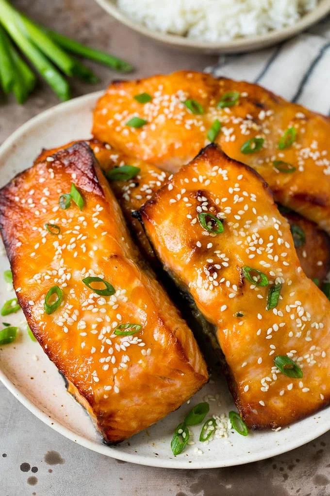

Miso Salmon

Description
Today I am going to share my tried-and-true easy salmon recipe, Miso Salmon
Miso is made primarily from fermenting soybeans, salt, koji (a fermentation starter), and sometimes rice
Ingredients
salmon
miso paste
mirin
sugar
salt
Steps
- mix together liquids
- marinade salmon with sauce
- let sit for 3 hours
- preheat over to 350
- cook 20-25 mins
- remove from oven and enjoy!